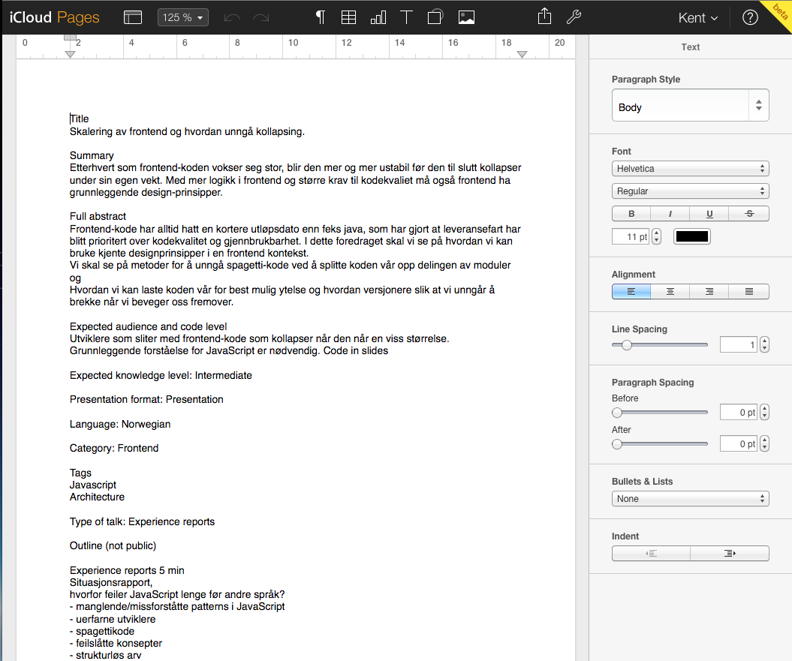
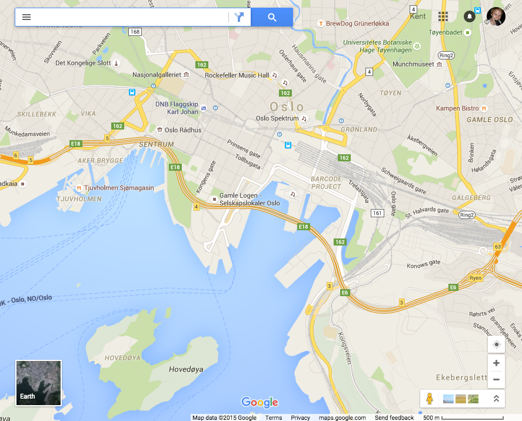
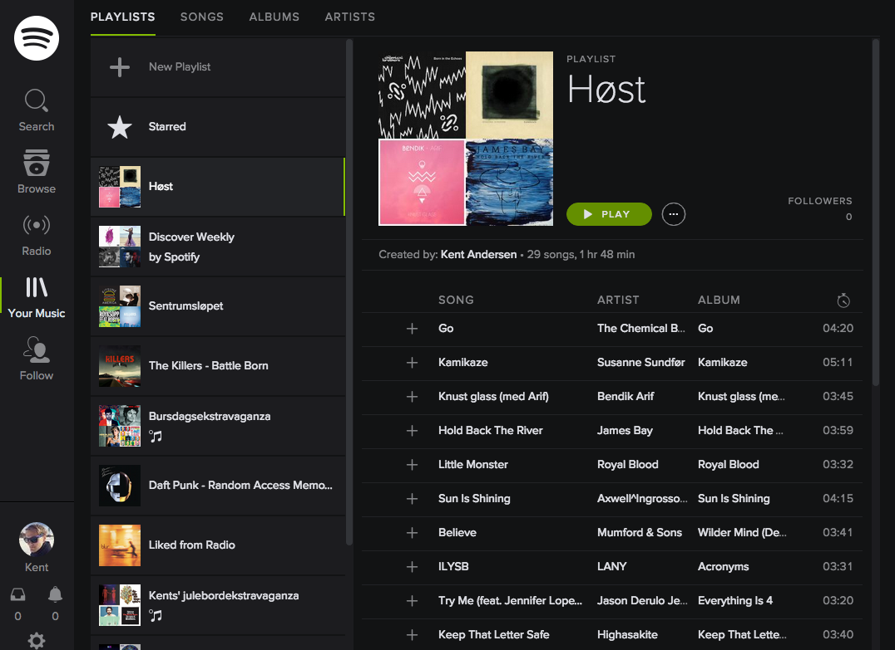

class: front-page # Webutvikling 101 ## NTNU <span class="today-date"></span> --- #Webutvikling 101 ##Repo <div style="font-size: 2em"> <a href="https://github.com/bekk/webutvikling101">http://tiny.cc/bekkweb101</a> </div> <br> <br> <div style="font-size: 2em"> <a href="https://github.com/bekk/webutvikling101">github/bekk/webutvikling101</a> </div> --- class: center middle <button id="load-data" class="btn loud">Last mer data</button> --- <div class="example-box" style=" top: 30%; height: 200px; "> Klient </div> <div class="example-box" style=" top: 22%; right: 2em; "> Server </div> -- <div class="example-arrow arrow-right" style="top: 250px;"> Request </div> -- <div class="example-arrow arrow-left" style="top: 350px;"> Response </div> --- <div class="example-box" style=" top: 30%; height: 200px; "> Klient </div> <div class="example-box" style=" top: 22%; right: 2em; "> Server </div> <div class="example-arrow arrow-right" style=" top: 250px; text-transform: lowercase; "> http://localhost:5000/sok?tag=bekk </div> <div class="example-arrow arrow-left" style=" top: 350px; text-transform: none; text-align: left; "> <pre style=" margin: 0; padding: 0 1em; font-size: 0.8em; "> [{ "url":"https://flickr.com/bilde1.jpg", "title":"Fint bilde av en bekker" },{...}] </pre> </div> --- # Laste data ```javascript var httpRequest = new XMLHttpRequest(); httpRequest.onreadystatechange = function() { if (httpRequest.readyState === 4) { if (httpRequest.status === 200) { var data = JSON.parse(httpRequest.responseText); console.log(data); } else { console.log('There was a problem with the request.'); } } } httpRequest.open('GET', 'http://localhost:5000/sok?tag=bekk'); // Setter opp request httpRequest.send(); // Sender request ``` --- # Laste data ```javascript fetch('http://localhost:5000/sok?tag=bekk') ``` --- # Laste data ```javascript fetch('http://localhost:5000/sok?tag=bekk').then(function(response) { // her kan du gjøre noe med responsen }); ``` --- # Laste data -- ## JSON ```javascript fetch('http://localhost:5000/sok?tag=bekk').then(function(response) { return response.json(); }); ``` -- ## Text ```javascript fetch('http://localhost:5000/sok?tag=bekk').then(function(response) { return response.text(); }); ``` -- ## Blob ```javascript fetch('http://localhost:5000/sok?tag=bekk').then(function(response) { return response.blob(); }); ``` --- # Laste data ```javascript fetch('http://localhost:5000/sok?tag=bekk').then(function(response) { return response.json(); }).then(function(data) { console.log(data); }); ``` -- ``` [{ "url":"https://flickr.com/bilde1.jpg", "title":"Fint bilde av en bekker" },{ "url":"https://flickr.com/bilde2.jpg", "title":"Ikke fullt så fint bilde av en bekker" },{ "url":"https://flickr.com/bilde3.jpg", "title":"Rart bilde av en bekk" },{ ... }] ``` --- # Laste data ```javascript fetch('http://localhost:5000/sok?tag=bekk').then(function(response) { return response.json(); }).then(function(data) { console.log(data); }).catch(function(error) { throw error; }); ``` --- # Same origin policy ```javascript fetch('https://ntnu.no'); ``` -- You will receive an error. `XMLHttpRequest` cannot load https://ntnu.no. No `'Access-Control-Allow-Origin'` header is present on the requested resource. Origin http://localhost:5000 is therefore not allowed access. -- An origin is defined as a combination of URI scheme, hostname, and port number. --- # Same origin policy <div class="example-same-origin"> http://localhost:5000 </div> -- <div class="example-same-origin"> https://ntnu.no:443 </div> --- # Same origin policy <div class="example-same-origin"> <span class="protocol">http</span>://<span class="domain">localhost</span>:<span class="port">5000</span> </div> <div class="example-same-origin"> <span class="protocol">https</span>://<span class="domain">ntnu.no</span>:<span class="port">443</span> </div> -- <div style="margin-top:0.5em;font-size: 5em">😭</div> --- # Same origin policy <div class="example-same-origin"> <span class="protocol">http</span>://<span class="domain">localhost</span>:<span class="port">5000</span> </div> <div class="example-same-origin"> <span class="protocol">http</span>://<span class="domain">localhost</span>:<span class="port">5000</span>/sok?tag=bekk </div> -- <div style="margin-top:0.5em;font-size: 5em">😻</div> --- class: center middle # DevTool ## ⌘ + ⌥ + i / ctrl + ⇧ + i --- class: split # Oppgave * Gjør en request mot `/sok?tag=bekk` når siden blir lastet * Logg ut resultatet i consollet <iframe src="http://localhost:5001/" style="width: 50%; border-left: 1px solid #515151;" /> --- class: center middle #Vise bildene --- #Ønsket resultat <iframe src="//localhost:5002" style="height: 80%; width: 50%;" /> --- # Hva vi har ```javascript function getPhotos(tag) { return fetch('/sok?tag=' + tag).then(function(resp) { return resp.json(); }); } getPhotos('bekk').then(function(data) { console.log(data); }); ``` ```json [{ "url": "https://farm2.staticflickr.com/1545/25292140150_8029266c75.jpg", "title": "Freeze" }, { "url": "https://farm2.staticflickr.com/1485/25535245756_37be2821ee.jpg", "title": "Winter" }...] ``` --- # Ønsket HTML ```html <main> <figure> <img src="https://farm2.staticflickr.com/1545/25292140150_8029266c75.jpg" /> <figcaption>Freeze</figcaption> </figure> <figure> <img src="https://farm2.staticflickr.com/1485/25535245756_37be2821ee.jpg", /> <figcaption>Winter</figcaption> </figure> <!-- ... --> </main> ``` --- # Løkker ```javascript var data = ["hei", "på", "deg"]; for (var i = 0; i < data.length; i++) { var tekst = data[i]; console.log(i + ': ' + tekst); } ``` -- ``` 0: hei 1: på 2: deg ``` --- # Template strings ```javascript var name = "Mats"; var text1 = 'Hei, ' + name + ', hvordan går det?'; var text2 = `Hei, ${name}, hvordan går det?`; ``` -- Ikke 'enkeltfnutt' -- Ikke "dobbeltfnutt" -- Men \` backtick ` (shift + knappen før backspace) --- # Template strings ```javascript var img = { url: "http://flickr.com/bilde.jpg", title: "Kult bilde" }; var html = ` <figure> <img src="${img.url}" /> <figcaption>${img.title}</figcaption> </figure> `; ``` -- ```javascript var html = '' + '<figure>' + '<img src="' + img.url + '" />' + '<figcaption>' + img.title} + '</figcaption>' + '</figure>'; ``` --- # Dom repetisjon ```javascript var medTag = document.querySelector('body'); var medTag2 = document.querySelector('main'); var medId = document.querySelector('#min-boks'); ``` -- ```javascript var tekst = medTag.textContent; medTag.textContent = 'Hei på deg'; ``` -- ```javascript var html = medTag.innerHTML; medTag.innerHTML = '<div>Masse <b>HTML</b> kode</div>'; ``` --- class: split # Oppgave * Lag en ny funksjon som heter `renderImages` som tar inn listen over bilder * Denne funksjonen skal returnere HTML-markup * For hvert bilde, lag en `<figure>` med `<img>` som viser bildet og en `<figcaption>` som viser tittelen * Sett HTML-en som `renderImages` returnerer som innhold til `<main>`-elementet <iframe src="http://localhost:5002/" style="width: 50%; border-left: 1px solid #515151;" /> --- class: center middle #Responsive design --- # Hvorfor? * Trenger bare lage én nettside, fungerer på alle enheter * PC, tablet, mobil, tv... * Brukervennlig * Zoomkrav i universell utforming ??? Sammenligne vg.no med abakus.no evt ifinavet.no vise smal/stor side horisontal scroll, zoom Videre vise hva vi ønsker å oppnå, localhost:5003 Vise ser bra ut i mobilbredde, dårlig i fullbredde Sette til 50/49%, vise ser bedre ut. Sette 30% fullbredde, vise ser bra ut Men da dårlig på mobil! --- #Media queries CSS-regler som bare er aktive i visse tilfeller ```css @media (min-width: 500px) { .bokser { width: 50%; } } ``` -- * Enheter * all, print, screen, speech * Egenskaper * min-width, max-width, min-height, max-height, orientation, resolution, color, light-level Legger media-queries til slutt i CSS-en --- #Eksempel ```css .bokser { width: 100%; background: red; } @media (min-width: 500px) { .bokser { width: 50%; } } @media (min-width: 1000px) { .bokser { width: 33%; } } ``` ``` 250px => 100%, 750px => 50%, 1500px => 33% ``` --- #Eksempel, feil rekkefølge ```css .bokser { width: 100%; background: red; } @media (min-width: 1000px) { .bokser { width: 33%; } } @media (min-width: 500px) { .bokser { width: 50%; } } ``` ``` 250px => 100%, 750px => 50%, 1500px => 50% ``` --- class: split # Oppgave * Legg til media-queries nederst i CSS-filen for å: * Minske bredden på `figure` slik at det blir plass til 2 bilder i bredden ved medium skjermer * Vise 3 bilder i bredden ved enda bredere skjerm <iframe src="http://localhost:5003/" style="width: 50%; border-left: 1px solid #515151;" /> --- class: center middle #Forms --- #Form Representerer en interaktiv del av siden, og brukes for å sende data til en server ```html <form></form> ``` --- #Form Representerer en interaktiv del av siden, og brukes for å sende data til en server ```html <form></form> ``` *Noen nyttige attributter* ```html <form action="url"></form> ``` --- #Form Representerer en interaktiv del av siden, og brukes for å sende data til en server ```html <form></form> ``` *Noen nyttige attributter* ```html <form action="url"></form> ``` ```html <form action="url" method="get"></form> // url?key=value1&key2=value2 <form action="url" method="post"></form> // url ``` --- #Form Representerer en interaktiv del av siden, og brukes for å sende data til en server ```html <form></form> ``` *Noen nyttige attributter* ```html <form action="url"></form> ``` ```html <form action="url" method="get"></form> // url?key=value1&key2=value2 <form action="url" method="post"></form> // url ``` *Noen ikke fullt like nyttige attributter* ``` accept-charset, autocomplete, enctype, name, novalidate, target, ... ``` Sjekk <a href="https://developer.mozilla.org/en-US/docs/Web/HTML/Element/form" target="_blank">MDN form</a> --- #Input Definerer hva som skal sendes til serveren ```html <form action="url" method="get"> <input type="text" /> </form> ``` --- #Input Definerer hva som skal sendes til serveren ```html <form action="url" method="get"> <input type="text" /> </form> ``` ```html <form action="url" method="get"> <input type="text" name="sok" value="" placeholder="Søk" /> </form> ``` --- #Input Definerer hva som skal sendes til serveren ```html <form action="url" method="get"> <input type="text" /> </form> ``` ```html <form action="url" method="get"> <input type="text" name="sok" value="" placeholder="Søk" /> </form> ``` <label><input type="checkbox" /> checkbox</label><br /> <label><input type="radio" name="radio" /> radio1</label> <label><input type="radio" name="radio" /> radio2</label><br /> <label><input type="date" /></label> --- #Input Definerer hva som skal sendes til serveren ```html <form action="url" method="get"> <input type="text" /> </form> ``` ```html <form action="url" method="get"> <input type="text" name="sok" value="" placeholder="Søk" /> </form> ``` <label><input type="checkbox" /> checkbox</label><br /> <label><input type="radio" name="radio" /> radio1</label> <label><input type="radio" name="radio" /> radio2</label><br /> <label><input type="date" /></label> Sjekk <a href="https://developer.mozilla.org/en/docs/Web/HTML/Element/Input" target="_blank">MDN input</a> --- class: cols two #Input .col[ <input type="text" data-ex="1" data-listen-for="keyup" data-value-prop="value" /> ] .col[ <span id="ex1"></span> ] .col[ <input type="checkbox" data-ex="2" data-listen-for="change" data-value-prop="checked" /> ] .col[ <span id="ex2"></span> ] Uthenting av verdien til ett element varierer. For tekstelement; ```javascript document.querySelector('#da-tekstelement').value ``` For checkbox; ```javascript document.querySelector('#da-checkbox').checked ``` --- class: cols two #Browser default .col[ <label><input type="checkbox" />Default</label> ] .col[ ```html <input type="checkbox" /> ``` ] .col[ <label><input type="checkbox" class="prevent" />Endret</label> ] .col[ ```javascript document .querySelector('input') .addEventListener('click', function(e) { e.preventDefault(); }); ``` ] Form- og input-elementer kommer med en del *default behaviour* fra browseren. Denne oppførselen kan hindres ved hjelp av `preventDefault()` --- #Submit *Submit*-knapp ```html <form action="/sok.html" method="post"> <input type="text" name="sok" value="" autocomplete="off"/> <button type="submit">Søk</button> </form> ``` --- #Submit *Submit*-knapp ```html <form action="/sok.html" method="post"> <input type="text" name="sok" value="" autocomplete="off"/> <button type="submit">Søk</button> </form> ``` Det skjer en `submit`-event når `form` skal sendes til serveren. --- #Submit *Submit*-knapp ```html <form action="/sok.html" method="post"> <input type="text" name="sok" value="" autocomplete="off"/> <button type="submit">Søk</button> </form> ``` Det skjer en `submit`-event når `form` skal sendes til serveren. Dette kan lyttes etter ved hjelp av `addEventListener` ```javascript document.querySelector('.mitt-form').addEventListener('submit', function(event) { // Stop default behaviour // Do something }); ``` --- class: split # Oppgave * Forsett på løsningen fra forrige oppgave * Legg til submit event handler på form'et * Hent ut verdien som er skrevet inn i tekstfeltet * Bruk verdien til å hente ut og vise de nye bildene <iframe src="http://localhost:5004/" style="width: 50%; border-left: 1px solid #515151;" /> --- class: center middle bekk-top # Navigasjon --- # Navigasjon `Anchor`-tagen definerer en hyperkobling til en annen ressurs på weben ```html <a>...</a> ``` -- Nyttige attributter på `Anchor` ```html <a href="...">...<a> <a href="..." target="_blank">...<a> <a href="..." download="AwesomeFil.zip">...<a> ``` -- Lenke på bilder: ```html <a href="/img/bilde.jpg"> <img src="/img/bilde.jpg" alt="Dette er et bilde"> </a> ``` --- # Navigasjon - Router _Routing_ bestemmer handlingen(e) som skal håndtere en forespørsel. -- ## Lokasjonsobjektet ```javascript window.location ``` ... returnerer et lokasjonsobjekt som inneholder informasjon om dokumentets _lokasjon_ -- ## Stien ```javascript window.location.pathname ``` ... returnerer stien som ressursen du besøker ligger på --- # Navigasjon - Router Oppdatere stien ```javascript window.location.pathname = '/foo/bar'; window.location.pathname; // /foo/bar ``` -- Vi kan bruke dette til å feks. lagre unna tilstanden til applikasjonen. --- # Navigasjon - Router Tolke stien ved å feks. splitte på `/` ```javascript var path = window.location.pathname.split('/'); // ['', 'foo', 'bar'] path[1]; // foo path[2]; // bar ``` --- # Navigasjon - Router Håndtere tilstanden til applikasjonen ```javascript // http://example.com/tech/19 function router() { var path = window.location.pathname.split('/'); var type = path[1]; // tech var id = path[2]; // 19 getPost(type).then(function (data) { var post = data[id]; // gjør noe med post nr 19 }) } // kaller router router(); ``` --- class: split # Oppgave Forsett på løsningen fra forrige oppgave * Lag en `router`-funksjon som tolker stien med formatet: `http://host/søkertekst/indeks` * om kun **søketekst** er oppgitt: vis alle resultatene * om **søketekst** og **indeks** er oppgitt: vis bildet på gitt indeks * Få søkefunksjonen til å oppdatere stien ved søk * Lag bildene fra søkeresultatet klikkbare med stien: `/søketekst/indeks` Feks.: http://localhost:5000/norway/0 så skal du vise første bilde i resultatet når man søker etter **norway** <iframe src="http://localhost:5000/sok.html" scrolling="no" style="width: 50%; background-color:#fff" /> --- class: center middle bekk-top # Single-page application --- class: center middle Lage nettsider / web-applikasjoner som passer inn på _én_ side. --- class: center middle  .source[https://www.icloud.com/#pages] --- class: center middle  .source[https://maps.google.com/] --- class: center middle  .source[https://play.spotify.com/] --- # Single-page application ## Hva? Vi ønsker: * unngå at siden lastes på ny når man klikker på en lenke * kunne gå frem og tilbake i historikken * kunne sende direktelenke til andre ## Hvorfor? Vi får en bedre brukeropplevelse med en flyt som minner om en desktop applikasjon ## Hvordan? History API --- # Single-page application ## History History lar det manipulere nettleserhistorikken for en nettside: * pushState * popstate --- # Single-page application - pushState **pushState** lar en skrive til nettleserhistorikken for hvert operasjon vi utfører ```javascript history.pushState(state, title, URL); ``` * **state:** tilstandsobjekt * **title:** tittel på siden * **URL:** sti til ressurs -- Ikke alltid at man trenger å definere alle parametre: ``` history.pushState(undefined, '', 'foo/bar') ``` --- # Single-page application - popstate For hver gang du går tilbake i historikken vil eventen **popstate** bli kalt. Vi kan lytte på denne, og kalle vår egen router-funksjon for å oppdatere innholdet i siden. ```javascript window.addEventListener('popstate', router); ``` --- # Single-page application ## pushState / popstate vs window.location window.location holder deg i samme dokument kun om du endrer på hash-verdien. Med _History_ unngår du at nettleseren oppdaterer dokumentet. --- # Single-page application - anchor hijacking Vi ønsker å unngå at nettleseren oppdaterer siden når vi besøker en ny lenke. Dette gjør vi ved å stoppe standard oppførsel som skjer når man klikker på lenkene: ```javascript document.querySelector('main').addEventListener(function (event) { if (event.target.tagName === 'A') { event.preventDefault(); // Update history and call router } }); ``` --- # Single-page application - Eksempel HTML: ```html <a href="/foo/bar"><img src="..." alt="..."></a> ``` JavaScript: ```javascript document.querySelector('main').addEventListener('click', function (event) { var parent = event.target.parentNode; if (parent.tagName === 'A') { var href = parent.getAttribute('href'); history.pushState(undefined, '', href); router(); } }); ``` --- class: split # Oppgave Forsett på løsningen fra forrige oppgave * Bytt ut oppdatering av window.location med pushState * Overstyr klikking på lenker slik at du unngår at nettleseren oppdaterer siden * For hver gang du klikker på en lenke skal history oppdateres, og router() kalles --- class: center middle bekk-top # Takk for oss! bekk.no/jobb